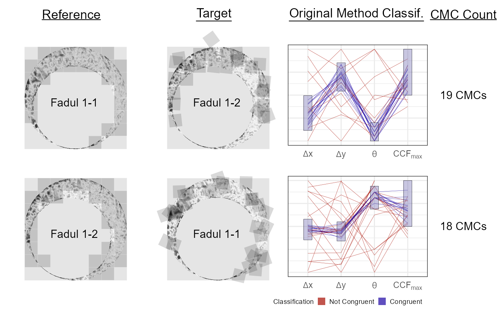

decisionRuleDescription.RmdThis vignette will describe the decision rules used in the original method of Song (2013) and the High CMC method of Tong et al. (2015). For illustrative purposes, we will consider a comparison between a known match and known non-match pair of cartridge cases from the stuy performed by Fadul et al. (2011). The raw cartridge case scans can be downloaded from the National Ballistics & Toolmark Research Database. The scans were preprocessed using functions available in the cmcR package and are not discussed here. Refer to the fadul_examples.R script available on the cmcR GitHub page for how these scans were preprocessed. We will also not discuss how similarity features are extracted from two processed scans. Refer to the documentation of the cellpairwiseCompCor_bothDirections function on the cmcR website for information regarding this procedure.
We will consider comparisons between three cartridge case scans. Fadul 1-1 and Fadul 1-2 are known matches (i.e., were fired from the same firearm) while Fadul 2-1 is a non-match. The comparisons considered are Fadul 1-1 vs. Fadul 1-2 and Fadul 1-1 vs. Fadul 2-1.
The three processed cartridge cases are shown below.
To illustrate the assumptions underlying the CMC method, compare the results of the cell-based comparison procedure for the comparison between the known match pair Fadul 1-1 and Fadul 1-2 and the known non-match pair Fadul 1-1 and Fadul 2-1. shows the distributions of the \(\{(x_i, y_i)\}_{i = 1,...,n}\) values which produce the highest pairwiseCompCor for the alignment of each cell/region pair. The squares in are centered on the comparisons’ respective \((x_{\text{ref}},y_{\text{ref}})\) values and represent the maximum distance an \((x_i,y_i)\) estimated translation value can be from \((x_{\text{ref}},y_{\text{ref}})\) to be classified as “congruent” based on thresholds \(T_{x} = T_{y} = 20\) pixels. Of the 29 cell/region pairs considered in the known match comparison between Fadul 1-1 and Fadul 1-2, 19 \((x_i,y_i)\) values are within 20 pixels of \((x_{\text{ref}},y_{\text{ref}})\). In contrast, 3 out of 35 \((x_i,y_i)\) are within 20 pixels of \((x_{\text{ref}},y_{\text{ref}})\) for the known non-match comparison between Fadul 1-1 and Fadul 2-1. These plots exhibit similar behavior to Figures 1 and 2 in which show the estimated translation values for various rotation values for the same cartridge case pairs.
Turning our attention to the estimated rotation values, shows the distribution of the \(\theta_i\) values which produce the highest pairwiseCompCor for the comparisons of Fadul 1-1 vs. Fadul 1-2 and Fadul 1-1 vs. Fadul 2-1. A vertical line is drawn at the comparisons’ respective \(\theta_{\text{ref}}\) value and a threshold of \(T_{\theta} = 6\) degrees is used to classify \(\theta_i\) values as “congruent.” 25 of 29 known match and 2 of 34 known non-match \(\theta_i\) values are classified as congruent under these conditions.

An analogy is useful for understanding the difference between the decision rules of the original method of and the High CMC method. Consider the decision rules as a voting system by which each cell in the reference scan votes for what it considers to be the true registration phase (translations and rotation) of the overall scans. The “votes” of each cell are ranked based on the associated pairwiseCompCor\(_{\max}\) value. The original method of might be viewed as a single-choice voting system similar to the system used in U.S. presidential elections. That is, every cell is allowed to submit one vote corresponding to the registration phase with the highest pairwiseCompCor\(_{\max}\) value. Some of these votes are discarded if the associated pairwiseCompCor\(_{\max}\) are below the \(T_{\text{pairwiseCompCor}}\) threshold. A consensus is determined by counting the number of votes that are close to the reference values \(x_{\text{ref}}, y_{\text{ref}}, \theta_{\text{ref}}\) (which is yadically defined based on the \(T_x,T_y,T_{\theta}\) thresholds). By considering only the “top vote” of each cell, information is lost regarding other registration phases for which a cell might also rank highly. As observe:
some of the valid cell pairs may be mistakenly excluded from the CMC count because by chance their correlation yields a higher pairwiseCompCor value at a rotation angle outside the threshold range \(T_\theta\).
The High CMC method lifts the single-choice restriction by allowing cells to cast a vote for the translation phase at every \(\theta\) value for which it has a sufficiently large associated pairwiseCompCor\(_{\max}\) value. Under this system, each vote represents the translation phase that the cell considers to be the true translation phase of the overall scans conditional on a particular \(\theta\) value. In this way, the High CMC method might be viewed as an approval voting system in which an individual may cast a vote for all of the candidates that they would like. For each \(\theta\) value, the number of translation phase votes that are close to the \(\theta\)-specific reference values \(x_{\text{ref},\theta}, y_{\text{ref},\theta}\) are counted (now defined based only on the \(T_x,T_y\) thresholds). This yields what refer to as a “CMC-\(\theta\)” distribution representing, as they consider it, the number of “congruent cells” per \(\theta\) value. Thus, there may be more than one \(\theta\) value for which a single cell/region pair is considered congruent. While seemingly contradictory (as there should be only one “true” \(\theta\) alignment value), justify their method by the empirical observation:
[i]f two images are truly matching, the CMC-\(\theta\) distribution of matching image pairs should have a prominent peak located near the initial phase angle \(\Theta_0\), while non-matching image pairs may have a relatively flat and random CMC-\(\theta\) distribution pattern.
The assumption underlying the High CMC method is that the number of cells classified as congruent should be larger near the true \(\theta\) value (the “initial phase angle \(\Theta_0\)”, as they call it) than for other \(\theta\) values if the cartridge case pair is indeed a match. These phenomena are illustrated in Figures and . shows the CMC counts per rotation value in both directions for the known match pair Fadul 1-1 and Fadul 1-2 from . We can clearly see a CMC mode around \(\theta = -24\) in one direction and \(21\) in the other, which is to be expected for a known match pair. , on the other hand, shows the CMC counts for the known non-match pair Fadul 1-1 and Fadul 2-1; in this comparison, no such CMC count mode is achieved.
Based on this observation, outline the following procedure for the High CMC method:
Conduct both forward and backward correlations at each rotation and record the registration based on pairwiseCompCor\(_{\max}\), \(x\), and \(y\) for each cell at each rotation. These data will be used in the next two steps separately.
At every rotation angle, each cell in the reference image finds a registration position in the compared image with a maximum pairwiseCompCor value. By selecting the registration with the maximum pairwiseCompCor value for each cell, the two CMC numbers determined by the four thresholds can be obtained based on the original algorithm []. The lower CMC number is used as the initial result.
Build CMC-\(\theta\) distributions using the data generated in step 1, by counting the number of cells that have congruent positions at each individual rotation angle. Calculate the angular range of “high CMCs” using both the forward and backward CMC-\(\theta\) distributions, as illustrated in Figs. 2 and 3.
If the angular range of the “high CMCs” is within the range \(T_\theta\), identify the CMCs for each rotation angle in this range and combine them to give the number of CMCs for this comparison in place of the original CMC number. In this step, if the range is narrower than \(T_\theta\), the nearby angles are included to make the range equal to \(T_\theta\); CMCs with same index in each rotation are only counted once.
introduce an additional criterion to identify a mode in the CMC count per \(\theta\) distribution. Let \(\{\text{CMC}_{\theta} : \theta \in \Theta \}\) denote the CMC-\(\theta\) distribution where \(\Theta\) is the set of rotation values considered for the comparison. Define CMC\(_{\max} \equiv \max_{\theta} \{\text{CMC}_{\theta} : \theta \in \Theta\}\). a “high” CMC threshold as CMC\(_{\text{high}} \equiv\) CMC\(_{\max} - \tau\) for some constant \(\tau\) (they choose \(\tau = 1\)). Now let \(\Theta_{\text{high}} \equiv \{\theta : \text{CMC}_{\theta} \geq \text{CMC}_{\text{high}}\}\). That is, \(\Theta_{\text{high}}\) consists of the \(\theta\) values with “high” CMC counts. propose calculating \(R = \max_{\theta} \Theta_{\text{high}} - \min_{\theta} \Theta_{\text{high}}\). If \(R \leq T_{\theta}\), then there is evidence that a single mode exists in the CMC-\(\theta\) distribution (and thus that the cartridge case pair is a match). Otherwise, no such mode exists (by their definition) and the cartridge case pair is likely not a match. The horizontal dashed lines in Figures and represent the CMC\(_{\text{high}}\) thresholds. The \(\theta \in \Theta_{\text{high}}\) are represented by blue bars. For the matching pair shown in , the range of \(\Theta_{\text{high}}\) is less than the threshold \(T_{\theta} = 6\) degrees, so this pair would “pass” the High CMC criterion. In contrast, the range of \(\Theta_{\text{high}}\) is larger than \(T_{\theta} = 6\) degrees for the non-match pair shown in . Thus, the non-match pair would “fail” the High CMC criterion.
The “prominent peak” empirical observation upon which the High CMC method is based does seem to hold for many known match and known non-match pairs in our experience. However, we’ve observed that the behavior of the CMC-\(\theta\) distributions depend heavily on the preprocessing procedures used and thresholds set. In particular, the CMC-\(\theta\) distributions for some KNM pairs exhibit the prominent peak behavior for a wide range of threshold values making them difficult to distinguish from KM pairs.